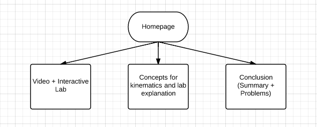
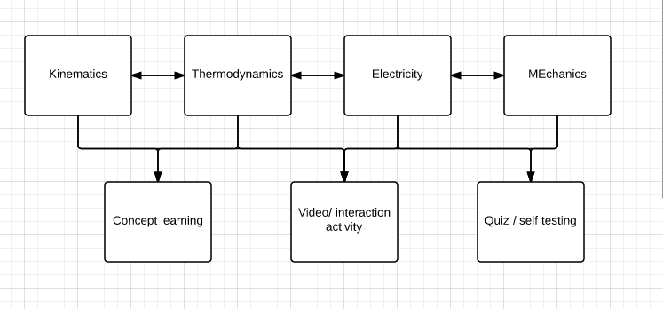

AP Physics II mid-term survival guide
objective
- To allow AP Physics II students to learn the 4 topics they would be tested on on their mid-term exam
- To allow Mr.Lo, the teacher, to communicate infromation not mentioned in class to students
- To allow AP Physics II students to find a reliable source of exercises and practice quesitons
- To allow Honor Physics students to have an idea about what they would learn in AP Physics II
success criteria
- The website has notes for each of the 4 topics that would be accessed on the mid-term
- The website has labs for each of the 4 topics that would be accessed on the mid-term
- The website has practice questions for each of the 4 topics that would be accessed on the mid-term
- The website is accessbile for all students in AIS
client
- Mr. Lo
audience
- AP Physics II students who want to learn the topics on the mid-term exam
- AP Physics II students who want to do some practice questions
- Parents of AP Physics II students who want to see what their children are learning in AP Physics II class
- Students who might be interested in studying AP physics II in the future
- Mr.Lo, when he wants to put up extra information about the topics on the mid-term exam
Flowchart ideas

This idea divides the sub-pages by topics. Then all topic pages(including a lab) leads into a page of combined videos and quizzes of all topics.
We didn't think it was a great idea since the audience might want to just concentrate on one topic when they study.
This idea focuses on only kinemetics and divides the subpages by lab, concept and conclusion.
This idea did not fulfill the sucess criteria of introducing all 4 topics.
The idea of dividing the subpages by lab, concept and conclusion was more effective in helping the students study since they provide help for students at different stages in understanging the topic.
This idea also divides the sub-pages by topic. But there's link for students to go from topic to topic without going back to a homepage
There's no home page in this idea, might be difficult to nevigate through
further resesarch about this project
- Similar websites
Changes made after meeting Mr.Lo
- learning based on experiment
- focus on one topic - kinematics (title of the site changed to AP Physics II Kinematics Survival Guide)
- be carzy, be fun
- include a video to attract the students to learn
New objectives
- To allow AP Physics II students to learn about kinetics through a lab
- To allow AP Physics II students to see practice questions on kinetics
- To allow Mr.Lo,the teacher, to communicate infromation not mentioned in class to students
- To allow Honor Physics students to have an idea about what they would learn about kinetics in AP Physics II
New success criteria
- The website contain notes on kinetics
- The website has an interactive lab about kinetics
- The website has a summary about what students should have learned from the notes and the lab
- The website has a set of practice questions about kinetics
- The website has the answer key to the practice questions
final flowchart

- Since we are only focusing on one topic, we cannot divide the subpages by topics.
- We divide the subpages based on the need of students at different stages of unstanding the topic.
- we chose this flowchart since we believed that this organization would make us meets all the success of the criteria